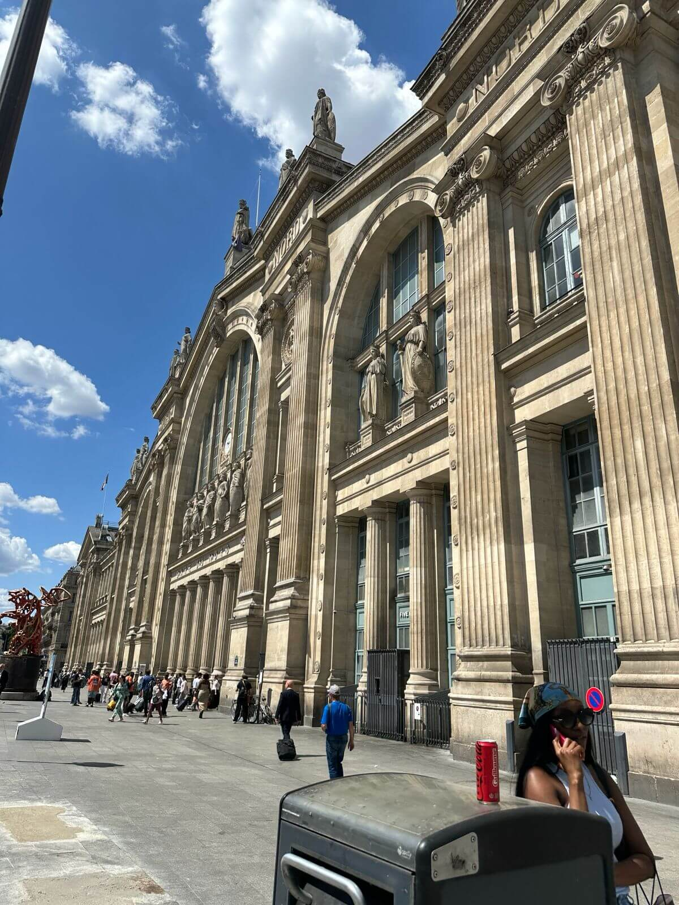
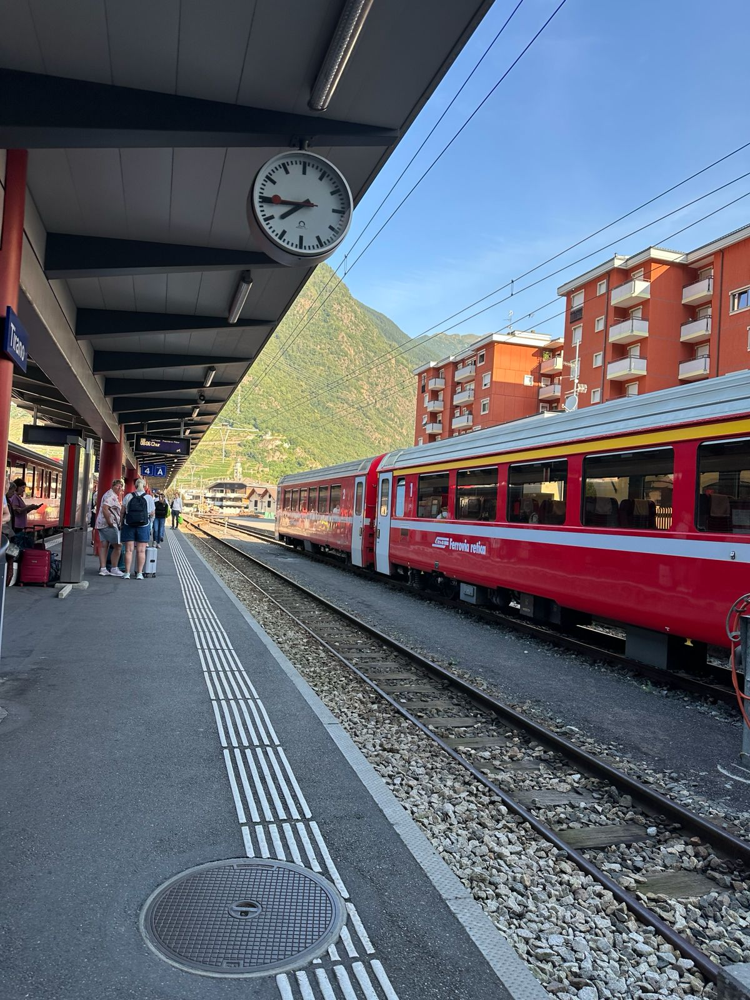
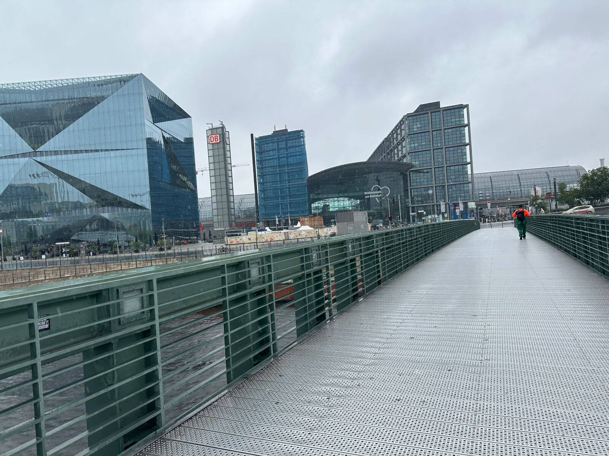
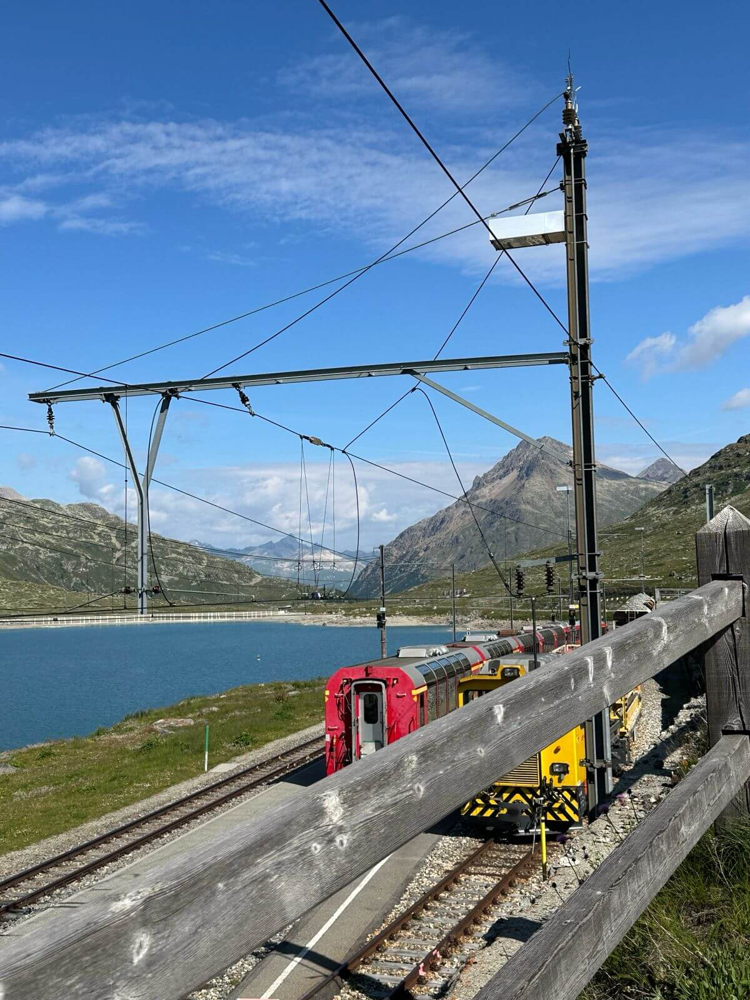
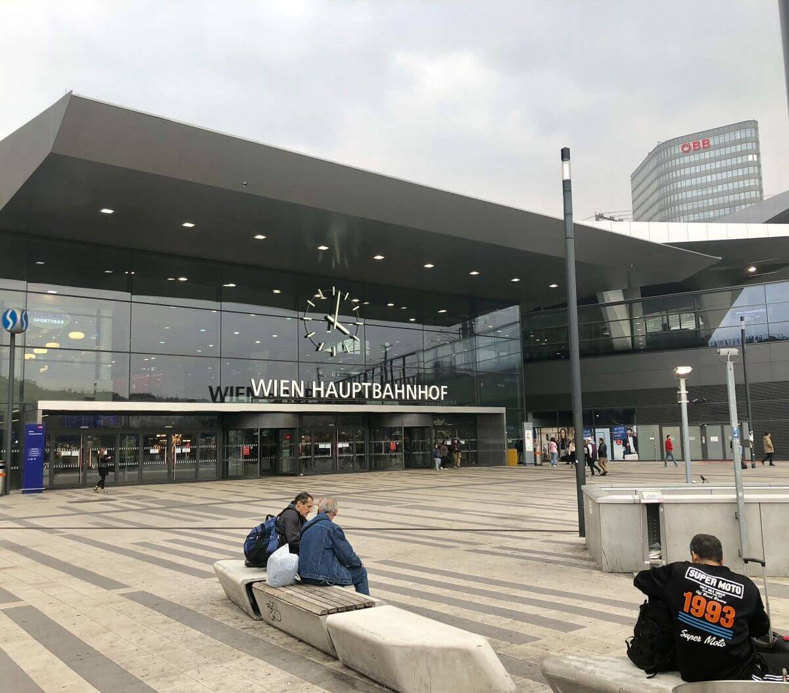
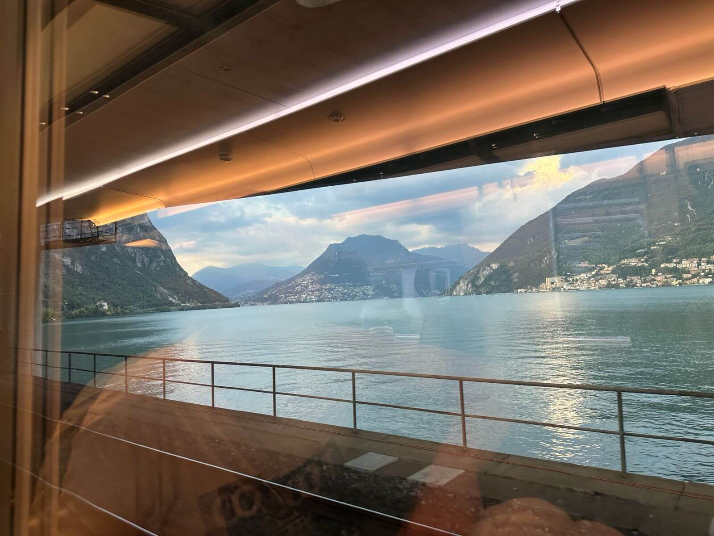

Paris Gare du Nord
One of Europe’s busiest stations. It’s in the very heart of beautiful districts of Paris.

Plan your Interrail adventure with route suggestions, travel news, and tips for your journey across Europe.
Explore Routes
One of Europe’s busiest stations. It’s in the very heart of beautiful districts of Paris.

A striking glass station in the heart of Germany’s capital, connecting east and west.

A high mountain railway station with fresh alpine air and stunning glacier views.

A modern station with great connections across Austria and into Central Europe.

Lakeside station in Swiss Ticino, where train travel meets Mediterranean-style promenades.